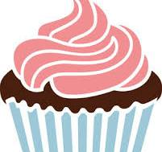

It's not just Cake
It's Cupcake
Cupcakes are delightful single-serving cakes that are typically baked in small, thin paper or aluminum cups. They come in a variety of flavors, from classic vanilla and chocolate to more adventurous options like red velvet, lemon, or even matcha. Cupcakes are often topped with frosting, which can be buttercream, cream cheese, ganache, or fondant, among others.
Order Now
